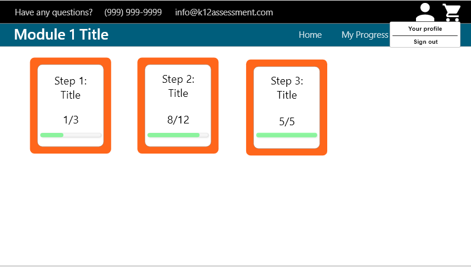
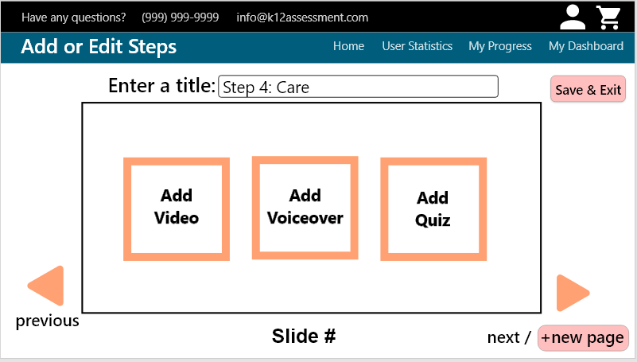
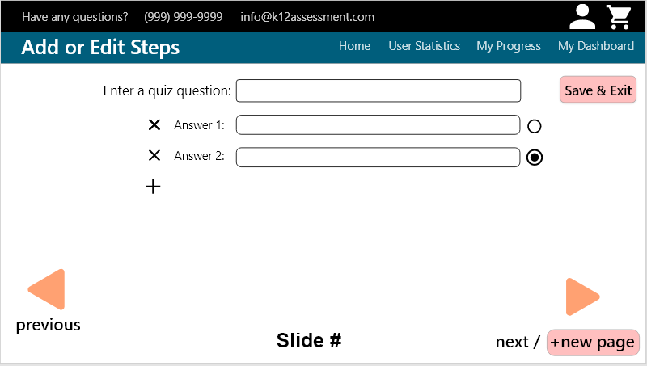
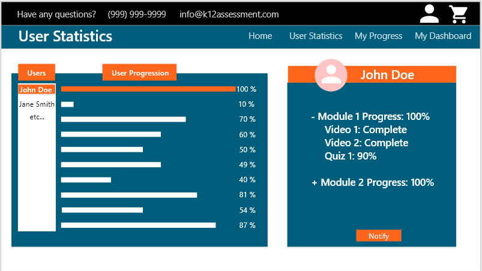
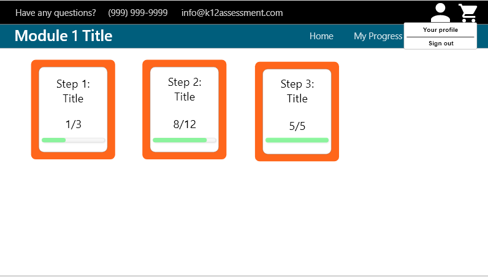
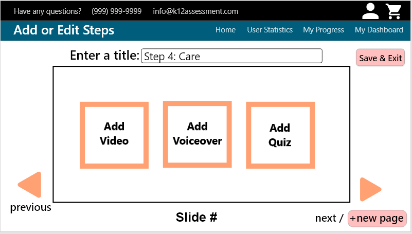
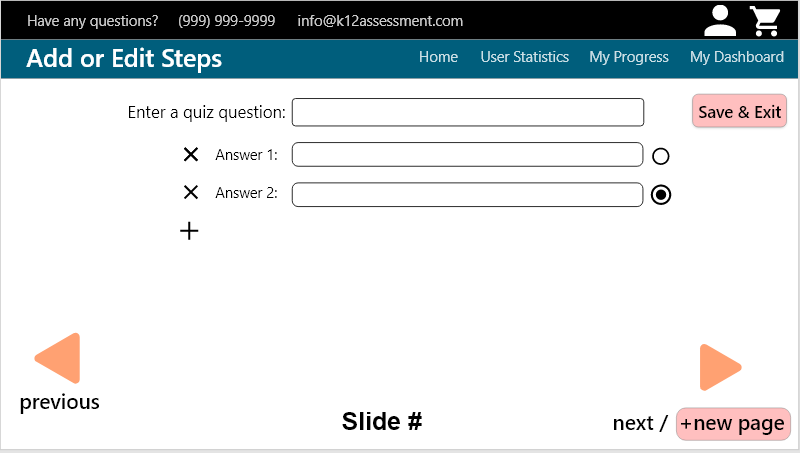
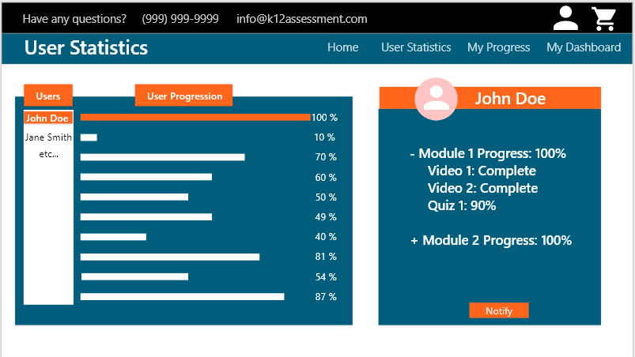

Senior Project 1 - CSC 190
Semester 1
Team Name:
CAT (Creative Team Application)
Team Members:
Casey Whitsell, David Rodriguez, Jaspreet Singh, Jean Lemuel Santos, Ronny Ritprasert, Ryan Le, Samantha Mahler
Client:
Lindon Lilly
Organization:
California Active Shooter Preparedness Training
Adviser:
Prof. Jingwei Yang
Background
California Active Shooter Preparedness Training
founded by Mr. Lindon Lilly provides training tools in areas such as active shooter
response, prevention of workplace violence and sexual harassment, and human trafficking awareness. The purpose of this project
is to create state-of-the-art workplace violence prevention virtual training software for employers to offer their employees and
create a safe work environment.
Scope
The client needs a web application that can be accessed all over California online to help train different organizations with custom education modules. The project developed will help the product owner create an educational curriculum for different business partners and clients to be prepared for various workplace violence scenarios and possibilities.
The project goal is to develop a web application that trains client's and business partner's employees on safety concern beyond active shooter preparedness
to prevent problems in the workplace and create compliance with CAL/OSHA.
Proposed Solution
The team will create a web based application that allows users to complete the training modules. The administrator will have the privilege to manage the content and track users' progress.
Highlights
The project will help improve workplace/school safety regarding workplace violence, bullying and harrasment.
Our project will provide the client a customized web application and user friendly interface to users' and the adminstrator.
It will have video based training modules to keep the users engaged.
 






